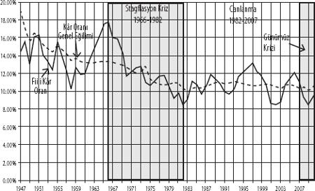

ABD'DE SAVAŞ SONRASI BİRİKİM YAPISI
Genel kâr oranı
Şekil 1, faiz ve vergi öncesi kârın, yılbaşındaki tesis ve makine cari maliyetine oranı cinsinden, finans dışı Amerikan şirketlerinin kâr oranını gösteriyor. Aynı zamanda, kâr oranının sergilediği genel eğilimi de noktalı çizgi şeklinde görüyoruz (ayrıntılar için bkz. Ek). Daha önce açıkladığımız gibi, faiz ödemeleri öncesindeki kâra dair bir ölçüte ihtiyacımız var, çünkü sonunda bu ölçütü aynı sermaye stokunun faiz karşılığı ile kıyaslayarak girişim kârına ulaşmayı hedefliyoruz. Finans dışı şirketler, kâr rakamlarını fiili faiz ödemeleri düşülmüş halde yayınladığından, bu ödemeleri yayınlanan kâr rakamlarına tekrardan eklemek bize kalıyor. Gelirlerinin bir kısmını faiz ödemelerinden elde eden finans şirketlerine ait kârın bir bölümü de, doğal olarak, finans dışı şirketler için bu şekilde hesaplanan kâr tutarının içinde bulunuyor.
Şekil 1: Finans Dışı Amerikan Şirketleri İçin Fiili Kâr Oranları ve Kâr Oranı Genel Eğilimi, 1947-2010 (Kâr = Faiz ve Vergi Öncesi Kâr)

Fiili kâr oranının pek çok dalgalanmaya maruz kaldığı ve kısa vadede belli tarihsel olaylardan büyük ölçüde etkilenebildiği anlaşılıyor. Örneğin, kâr oranının 1960'larda sergilediği müthiş yükseliş, Vietnam Savaşı'nın aynı döneme denk düşen tırmanışını yansıtmakta. Savaşlar, en azından erken evrelerinde, kârlılık açısından olumlu bir ortam yaratır. Yine Şekil 1'de görülen kâr oranı genel eğilimi ise, yapısal etmenlerin kâr oranı üzerindeki etkileri ile Vietnam Savaşı gibi konjonktürel olayların yol açtığı kısa vadeli dalgalanmalar arasında ayrım yapabilmek üzere eklendi. Kâr oranı eğiliminin otuz beş yıl boyunca aşağı yönlü seyrettikten sonra istikrar kazandığını görüyoruz. Peki, ne oldu da otuz beş yıllık eğilim değişti?
Üretkenlik ve reel ücretler
Şekil 2, bize en önemli ipucunu sunuyor. Amerikan şirketler kesiminde[15] 1947-2008 dönemi için saatlik üretkenlik ile emeğin saatlik reel gelirleri (reel ücretler) arasındaki ilişkiyi incelediğimizde, reel ücretlerin üretkenliğe göre daha yavaş yükselme eğilimi sergilediğini, dolayısıyla sömürü oranının artması yönünde bir gidişatın varlığını fark ediyoruz. Ancak, 1980'lerde Reagan ile başlayarak, reel ücret artış hızında daha da dikkat çekici bir gerileme kendini gösteriyor. "Reel ücretler ile üretkenlik arasında savaş sonrasında gözlenen ilişki 1980'den sonra da devam etseydi nasıl bir eğriyle karşılaşırdık?" sorusunun yanıtını tespit ettiğimizde ve bu senaryoyu fiili durumla karşılaştırdığımızda, söz konusu değişimi açıkça ayırt edebiliyoruz. Eğilimde ortaya çıkan bu sapma, bahsettiğimiz dönemde emeğin dört koldan planlı bir saldırıya maruz bırakılması yoluyla elde edilmiştir. Söz konusu saldırıların kâr oranı üzerinde büyük etki yarattığını, çünkü emeğin gelirleri ile kâr arasında büyük bir ilişkinin mevcut olduğunu ilerleyen satırlarda göreceğiz.
Şekil 2: Saatlik Reel Ücretler ve Üretkenlik, Amerikan Şirketler Kesimi, 1947-2010 (1992 = 100)
Reel ücret artışının bastırılması ile kârlılık arasındaki ilişki
Şekil 3, reel ücret artışının bastırılması sonucunda kârlar üzerinde ne kadar büyük bir etkinin ortaya çıktığını gösteriyor. Grafikte hem kâr oranlarının ortaya koyduğu fiili eğriyi, hem de "Finans dışı reel ücretler ile finans dışı üretkenlik arasında savaş sonrası dönemde yaşanan ilişki daha ileriki yıllarda da korunsaydı nasıl bir rota oluşurdu?" sorusuna yanıt veren eğriyi görüyoruz. Reagan dönemi ile başlayarak emeğe yöneltilen baskının açık bir amacı vardı: Yirminci yüzyılın geri kalan bölümünde ekonomik canlanmayı pompalamak.
Şekil 3: Finans Dışı Amerikan Şirketlerinin Fiili ve Varsayımsal Kâr Eğrileri, 1947-2009 (Varsayımsal eğri, reel ücretlerde savaş sonrasındaki eğilimin devam etmesi senaryosuna dayalıdır)
Faiz oranlarındaki olağandışı düşüş
Kâr oranındaki düşüşün, reel ücret artışlarındaki çok daha derin bir yavaşlama ile durdurulduğunu az önce gördük. Ancak bu durum, 1980'lerde başlayan büyük canlanmaya dair açıklamamızda meselenin sadece bir bölümünü aydınlatıyor. Yazımızın başında vurguladığımız gibi, kapitalist birikimin itici gücü, kâr oranı ile faiz oranı arasındaki fark, yani girişim kârının oranıdır. Büyük canlanmanın kapısını açan diğer kilide de işte burada rastlıyoruz: Faiz oranlarında, aşağı yukarı aynı dönemde başlayan ve olağanüstü uzun bir zamana yayılan düşüş. Şekil 4, üç aylık Amerikan hazine tahvilleri faiz oranının sergilediği gidişatı ve noktalı çizgiyle de sermaye malları fiyat indeksini (pk) gösteriyor. 1947 ile 1981 arasındaki ilk evrede faiz oranının yirmi dört kat artarak yüzde 0,59'dan yüzde 14,03'e ulaştığını görüyoruz. 1981'den itibaren gelişen ikinci evrede ise faiz oranı sert bir biçimde çakılıyor ve yüzde 14,03 ile başladığı yolculukta, 2009'da yüzde 0,16'ya iniyor. Piyasa etkilerini politika müdahalelerinden ayırabilmek için, rekabete dayalı olarak belirlenen faiz oranları kuramını irdelemek gerekir ki, çalışmamızın kapsamı dışına çıkmadan bunu yapmamız mümkün değil.[16] Ancak, piyasa etmenleri ve politika kararlarının birbiri karşısındaki ağırlığı ne olursa olsun, faiz oranındaki uzun yükseliş dönemi ve onu izleyen uzun süreli düşüş, belli başlı kapitalist ülkelerin çok büyük kısmında gözlemlendi. Şekil 5, ABD'deki faiz oranı ile ABD'nin ticaret ortaklarındaki faiz oranlarının ortalamasını karşılaştırarak bu gerçeği gözler önüne seriyor. Pek çok başka şeyin yanında, ABD'de gözlenen dinamiklerin aslında bir bütün olarak kapitalist merkezin karakterini yansıttığını da bu grafikte görüyoruz.
Şekil 4: ABD'de Faiz Oranı (3 aylık hazine tahvili), 1947-2008
Şekil 5: ABD'de ve Dünyada (ABD'nin Ticaret Ortakları) Nominal Faiz Oranları
Girişim kârı oranı ve 1980'ler sonrası büyük canlanma
Şimdi tüm bu öğeleri toparlayabiliriz. Genel kâr oranı ile faiz oranı arasındaki farkın girişim kârı olduğunu görmüştük. Birikimin temel itici gücü, sanayi kapitalizminin "vahşi güdüler"inin somut temeli de budur. Şekil 3, genel kâr oranındaki uzun süreli düşüşün, emek üzerine yöneltilen, 1982 sonrasında reel ücret artış hızının önceki dönemden çok daha düşük seviyelere inmesine yol açan toplu bir saldırıyla tersine çevrildiğini ortaya koyuyor. Şekil 4 ve 5, 1982 sonrasında faiz oranlarının ne denli hızlı bir gerileme sürecine girdiğini gözler önüne seriyor. Şekil 6 ise, tarihte eşi benzeri bulunmayan bu iki hareketin, girişim kârına büyük katkıda bulunduğunu söylüyor. 1980'lerde başlayan büyük canlanmanın sırrı işte budur.
Büyük canlanma, kendi içinde çelişkilerle doluydu. Faiz oranlarındaki müthiş düşüş bir borçlanma çılgınlığının fitilini ateşleyecek ve tüm ekonomik kesimlerin borç yükü muazzam ölçekte artacaktı. Tüketici harcamalarındaki büyümeyi sürdürmek üzere, reel ücret artışındaki yavaşlama sonucunda gelirleri daralan hane halkına, görülmedik ölçüde düşük maliyetlerle borçlanma olanağı sunulmaktaydı. Nihayetinde, Şekil 7'de görebileceğimiz gibi, hane halkı borcu ile gelir arasındaki oran 1980'lerde sert bir yükseliş içinde girdi. İkinci olarak, faiz oranı sıfır noktasına kadar düştüğünden (örneğin bugünlerde 0,0017, yani %0,17), bu bakımdan gidilebilecek yol kalmadı. Bu taban faiz oranı ile ticari işletmeler ve tüketicilerin borçlanma faiz oranları (temel faiz, ipotek faizi) arasındaki farkın devlet tarafından hâlâ daraltılabileceği doğrudur. Ancak, belli bir faiz oranıyla para bulup, başka bir oranla aynı parayı borç veren finans sektörünün kârına kaynaklık eden şey de bu fark olduğundan, sözünü ettiğimiz daralmaya dair olanaklar sınırlıdır.
Şekil 6: Finans Dışı Amerika Şirketlerinin Girişim Kârı Oranı, 1974-2008
Şekil 7: Hane halkı İçin Borç-Gelir Oranı
Şekil 8: Hane halkı Borç Servisi Oranı
Peki, borç-gelir oranı büyürse ne olur? Sonuçta, borçlanmak ucuzladığına göre, daha büyük bir borç-servisine (aşınmalar ve faiz ödemelerinin gelire oranı) girilmeden daha fazla kredi temin edilebilir. Gerçekten de, Şekil 8'de görüldüğü üzere, 1980'lerde borç-gelir oranı sürekli büyüdüğü halde, borç-servis oranı dar bir aralıkta kalmayı sürdürdü: Hane halkı daha fazla borçlanıyor, ancak aylık geri ödemeleri pek fazla yükselmiyordu. Ne var ki, borçların artmaya devam ettiği 1990'larda borç-servis oranı da yükselmeye başlayacaktı. 2007'ye gelindiğinde borç dalgası tarihsel bir zirve yaptı ve yayılan krizin sancıları arasında, borçlanmadaki düşüşün gelirlerdeki azalmayı da geride bırakmasıyla, 2008'de dibe çakıldı.
Burada önemli bir nokta çıkıyor karşımıza. İşçilerin bulunduğu taraftan bakılınca, faiz oranlarındaki düşüş, reel ücret artışındaki yavaşlamaya karşın bir süre daha yaşam standartlarını sürdürebilmelerine olanak tanıyan hane halkı borçlanmasını kışkırttı. Makroekonomik pencereden bakıldığında ise, sonuçta hane halkı harcamalarında ortaya çıkan kabarma, canlanmaya yakıt pompaladı. Canlanmanın başlıca itici gücünü, faiz oranlarındaki sert düşüş ve reel ücretlerin üretkenlik karşısındaki bir o kadar sert gerileyişi (yani sömürü oranının yükselişi) teşkil etmiş, bu iki etmenin bir araya gelmesiyle girişim kârı büyük ölçüde yukarı çekilmiştir. Meselenin iki tarafı da (sermaye ve emek) aynı iki etmenle kaşı karşıya geldi; ama zarlar hileliydi.